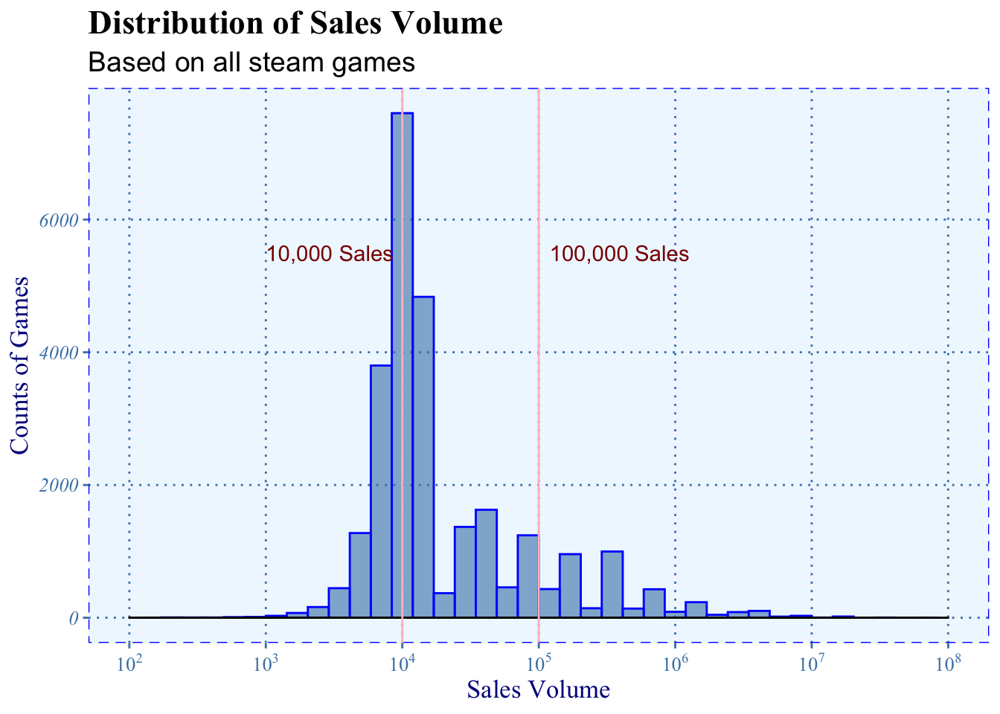
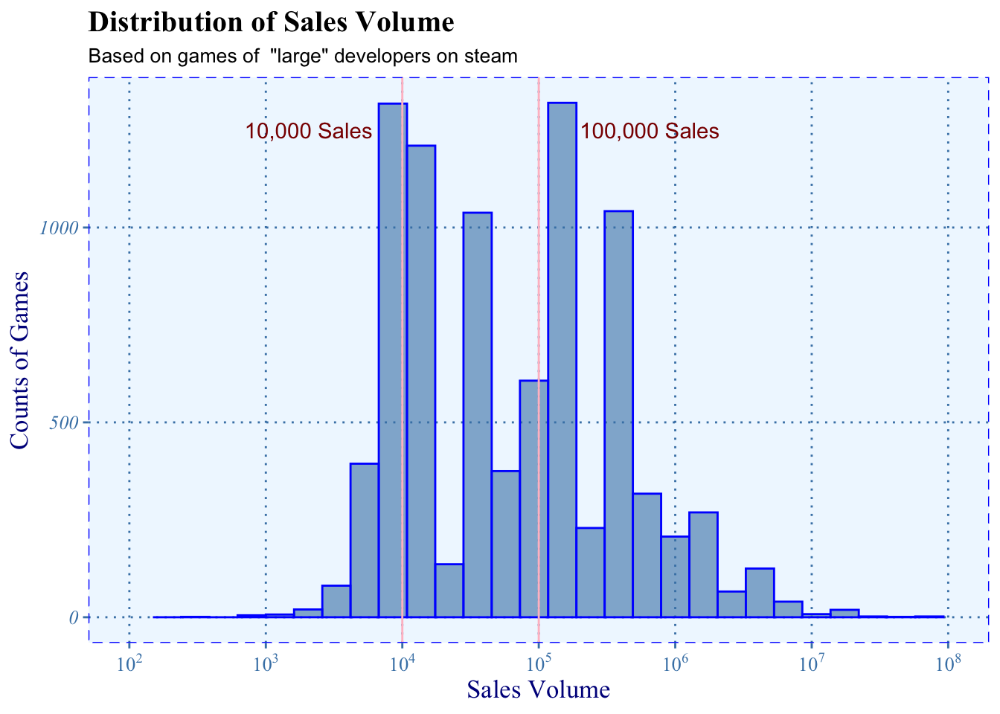

Chapter 3 Data transformation
3.1 Description
Since the data has been pre-cleaned by the source, our transformation is:
To deal with the sales variable, we convert the ranges (categories) into quantity by generating random numbers from the normal distribution in range. For each range, we set the medium number as the mean, standard deviation as the range/6. The main purpose of generating random number is to produce continuous data instead of categories data. For example, in range “0-20000”, we will replace value by generating number within mean = 10000, and standard deviation = 20000/6 (Since by the definition of area in normal distribution, 20000/6 will cover 99.7% of the total area in normal distribution) if the generated data is outside of 99.7% area in normal distribution, we will round them inside.
Combine developers with their branch (For instance, “Ubisoft Montreal” is the Canandian branch of “Ubisoft”) and integrate the format of the same developer in different expressions (For instance, “Astrofish Games” and “Astrofish Games Ltd” or “Astrofish Games Co, Ltd”).
Group the data by platform, developer, etc. Filter the developers with the number of games they publish.
3.2 Data Overview

First, we look at the graph as dimension of sales number and number of games, from the graph above to find the pattern for games’ sales volume. We draw two vertical lines, sales volume of 10,000 and 100,000, as threshold to identify the game.
We can see that it’s approximately a right-skewed normal distribution. The largest bar is around 10,000, which means most games have 10,000 sales volume or below. It means that most of the games on Steam hardly have players to play and are in poor quality. We believe that many games in this range are not produced seriously.
The games with more than 100,000 sales volume can be considered relatively popular as we see in the graph. They seem to attract a lot of people and can be compared with AAA games.
3.3 Transformation
To make our analysis more reasonable and clear, we filtered out the total game sales of companies that less than 100,000, narrowing down our analyze range.
As we said it before, we need good games to compare with AAA games. Using data of games in poor quality will only add the outliers and make the graph unclear. There is no comparability between them. To filter out these games, we compute the total sales volume of companies first. If a company has a high total sales, it’s more likely that the company puts many resources in games and it guarantees the quality of games. Thus, we use the total sales volume of a company when doing filtering.
Concerning that sales of games would vary dramatically from the time they just have been released and become steady after a period of time, we drop the games released after 2019 since the result would be unstable. In another perspective of filtering, we mark the companies whose sales volume over 100,000 as “large companies”. We define “ratio” as positive ratings over all ratings and “money” as sales volume multiplied by price.

The same distribution is shown after filtering: a right-skewed normal distribution. We can see that most of the games having sales volume less than 10,000 are filtered.